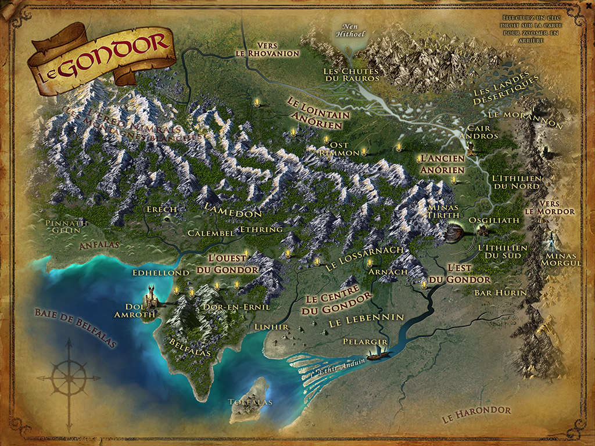

Le Royaume de Gondor (nom sindarin pour "Pays de la Pierre") est le plus grand royaume des Hommes de la Terre du Milieu au temps du Troisième Âge, frontalier avec le Rohan au nord, le Mordor à l'est, et le Harad au sud. Ses côtes sont bordées par l'océan Belegaer. Sa première capitale estOsgiliath, puis elle est déplacée à Minas Tirith.
